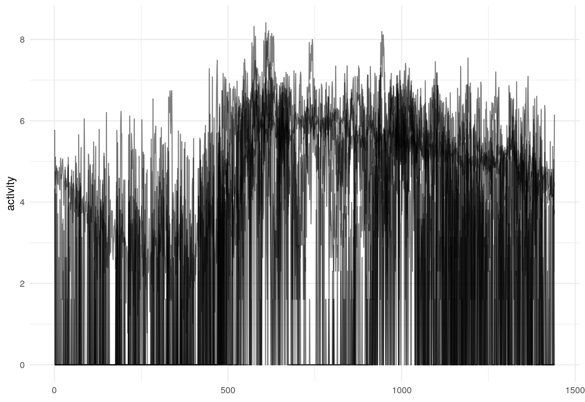
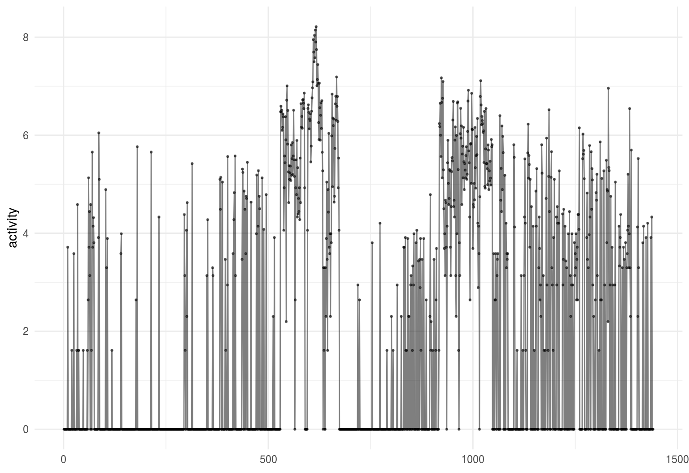
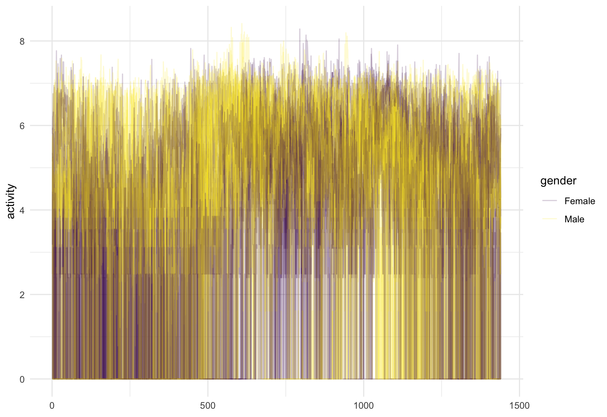
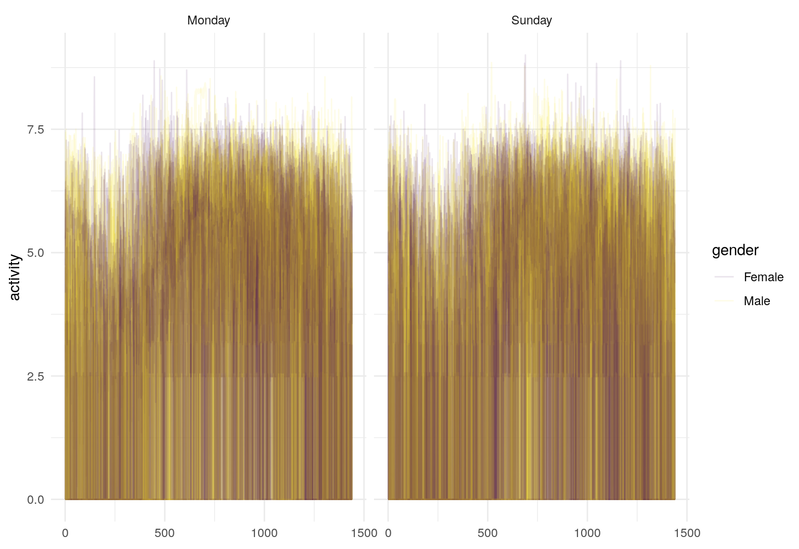
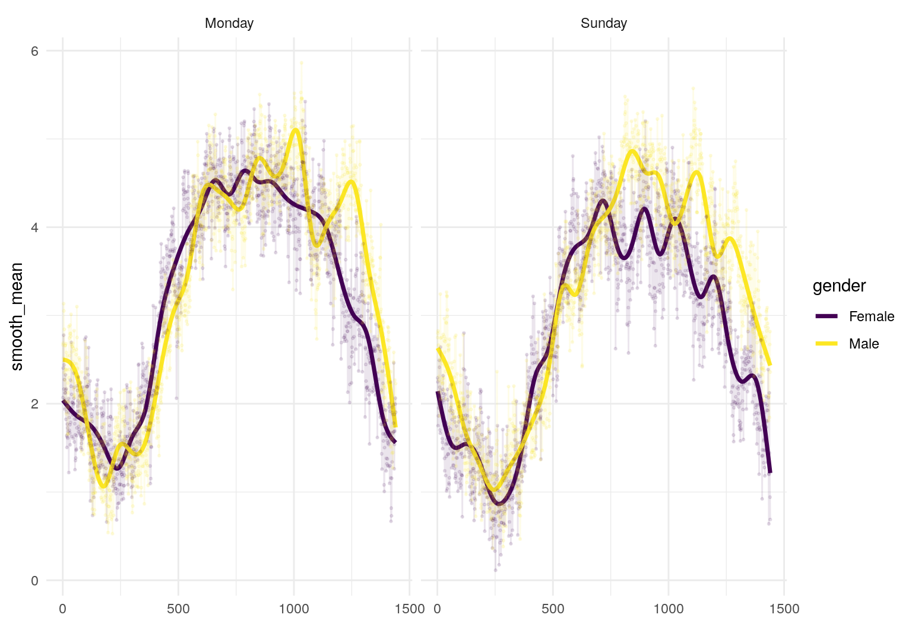
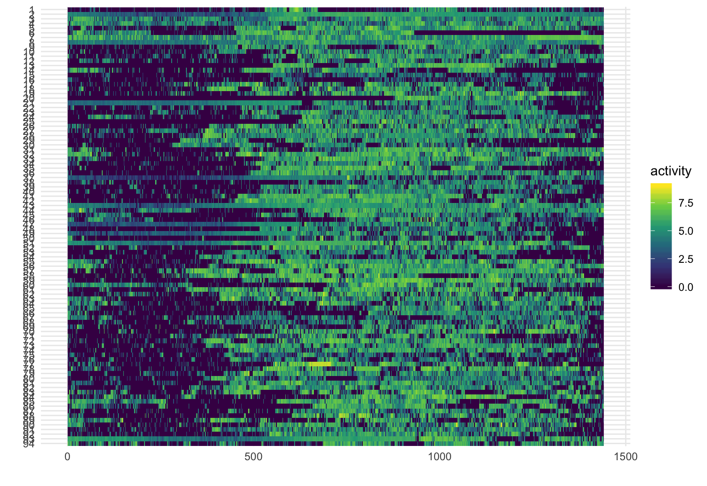

vignettes/x03_Visualization.Rmd
x03_Visualization.Rmdtidyfun dataThe tidyfun package is designed to facilitate functional data analysis in R, with particular emphasis on compatibility with the tidyverse. In this vignette, we illustrate data visualization using tidyfun.
Other vignettes have examined the tfd & tfb data types; how to convert common formats for functional data into these new data types; and data manipulation using tf vectors in data frames. We’ll use these in the following, and focus more specifically on visualiation
The data used in this vignette is the tidyfun::chf_df dataset. The data contain minute-by-minute observations of log activity counts (stored as a tfd vector called activity) over seven days for each of 47 subjects with congestive heart failure. In addition to id and activity, we observe several covariates.
data(chf_df)
chf_df
## # A tibble: 329 x 9
## id gender age bmi event_week event_type week day activity
## <int> <chr> <int> <int> <int> <chr> <int> <chr> <S3: tfd_r>
## 1 1 Male 41 26 41 . 1 Monday [1]: (1,0)…
## 2 1 Male 41 26 41 . 1 Tuesd… [2]: (1,0)…
## 3 1 Male 41 26 41 . 1 Wedne… [3]: (1,0)…
## 4 1 Male 41 26 41 . 1 Thurs… [4]: (1,4)…
## 5 1 Male 41 26 41 . 1 Friday [5]: (1,6)…
## 6 1 Male 41 26 41 . 1 Satur… [6]: (1,0)…
## 7 1 Male 41 26 41 . 1 Sunday [7]: (1,5)…
## 8 3 Female 81 21 32 . 1 Monday [8]: (1,3)…
## 9 3 Female 81 21 32 . 1 Tuesd… [9]: (1,0)…
## 10 3 Female 81 21 32 . 1 Wedne… [10]: (1,0…
## # ... with 319 more rowsggplot
ggplot is a powerful framework for visualization. In this section, we’ll assume some basic familiarity with the package; if you’re new to ggplot, this primer may be helpful.
geom_spaghetti and geom_meatballs
One of the most fundamental plots for functional data is the spaghetti plot, which is implemented in tidyfun + ggplot through geom_spaghetti:
chf_df %>%
filter(id == 1) %>%
ggplot(aes(y = activity)) +
geom_spaghetti()
A variant on the spaghetti plot is the meatballs plot, which shows both the “noodles” (i.e. functional observations visualized as curves) and the “meatballs” (i.e. original data visualized as points).
chf_df %>%
filter(id == 1, day == "Monday") %>%
ggplot(aes(y = activity)) +
geom_meatballs()
ggplot
The new geoms in tidyfun “play nicely” with standard ggplot aesthetics and options.
You can, for example, define the color aesthetic for plots of tf variables using other observations:
chf_df %>%
filter(id %in% 1:5) %>%
ggplot(aes(y = activity, color = gender)) +
geom_spaghetti(alpha = .2)
You can also use facetting:
chf_df %>%
filter(day %in% c("Monday", "Sunday")) %>%
ggplot(aes(y = activity, color = gender)) +
geom_spaghetti(alpha = .1) +
facet_grid(~ day)
Together with data manipulation tools, this can produce useful exploratory analyses:
chf_df %>%
group_by(gender, day) %>%
summarize(mean_act = mean(activity)) %>%
mutate(smooth_mean = tfb(mean_act)) %>%
filter(day %in% c("Monday", "Sunday")) %>%
ggplot(aes(y = smooth_mean, color = gender)) +
geom_spaghetti(size = 1.25, alpha = 1) +
geom_meatballs(aes(y = mean_act), alpha = .1) +
facet_grid(~ day)
## Percentage of raw input data variance preserved in basis representation:
## (per functional observation, tf_approx.):
## Min. 1st Qu. Median Mean 3rd Qu. Max.
## 88.70 91.35 92.00 91.56 92.25 93.00
## Percentage of raw input data variance preserved in basis representation:
## (per functional observation, tf_approx.):
## Min. 1st Qu. Median Mean 3rd Qu. Max.
## 89.00 91.80 93.00 92.14 93.05 93.30
gglasagna
Lasagna plots are “a saucy alternative to spaghetti plosts”. They are a variant on a heatmaps which show functional observations in rows and use color to illustrate values taken at different arguments. In tidyfun, lasagna plots are implemented through gglasagna:
chf_df %>%
filter(day %in% c("Monday", "Sunday")) %>%
gglasagna(activity)